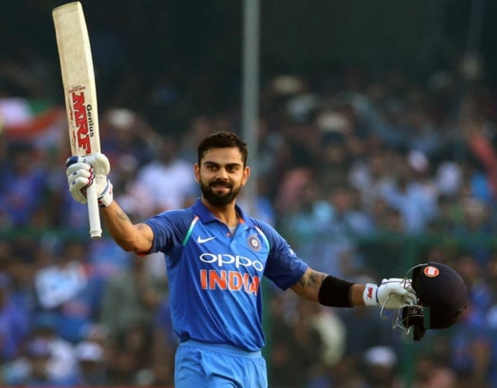

Virat kohli
Virat Kohli is not only a player but is a whole story of inspiration within himself. At the age of 30 (as of in 2019), Virat has been recognized as one of the best cricketers in the world. He made a huge name in the field of cricket and thus, he has millions of supporters and followers worldwide.
Everyone cricket-loving person knows about Virat’s success, but very few know about the struggle behind that success. One can read the Virat Kohli Biography to know each and every detail of his life so far. However, what’s necessary for an individual is to get inspired by Kohli’s life and practice the same for themselves. Virat Kohli is highly passionate about cricket and he always remains in the limelight for his lifestyle, flamboyancy, and positive ways of approaching things.
Along with this, Virat has also been involved in some controversies that took place at regular intervals of time. However, despite those controversies, the Indian Cricket team captain has achieved a lot in his career so far. There are numerous records made by Virat in the game of cricket, and thus his fans have given him many nicknames like; Run Machine, King Kohli, Chase Master, etc.
An assortment of incidents took place in the journey of Virat Kohli’s career that has inspired millions of youngsters. One such incident took place on December 19th, 2006.
Virat’s father, Mr Prem Kohli suffered from a heart stroke on 19th December and unfortunately passed away the same night. Virat Kohli was a young lad at that time and used to play domestic level cricket from the Delhi’s Ranji team. When this incident took place, Virat was playing a Ranji Trophy match and his team was under the jaws of defeat. The most inspiring decision taken by Virat in such a young age was to postpone his father’s burial and continue his innings to save Delhi from the defeat.
He played an amazing 90 runs knock the next day and took his team out of trouble. When media reporters asked Virat about this decision, he quoted; I wanted to play because for me not completing a cricket game is a sin. That was a moment that changed me as a person. The importance of cricket in my life is very high. Thus, this was an inspirational story of Virat Kohli. To read more such content, visit Crickclassics and live your passion for cricket.
| Year of winning | Name of Award |
|---|---|
| 2013 | Arjuna Award |
| 2017 | Padma Shri, India's fourth highest civilian award |
| 2018 | Rajiv Gandhi Khel Ratna |
| 2018 | Sir Garfield Sobers Trophy (ICC Cricketer of the Year) |